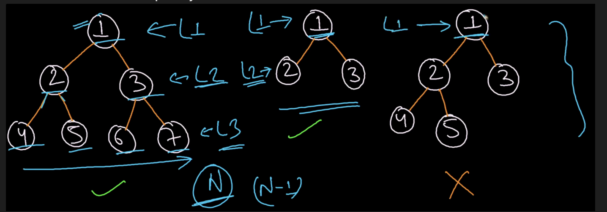
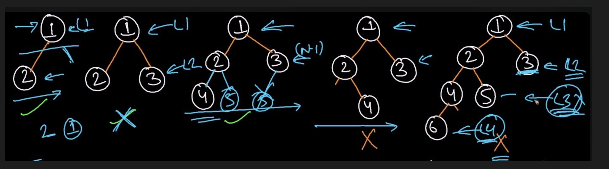
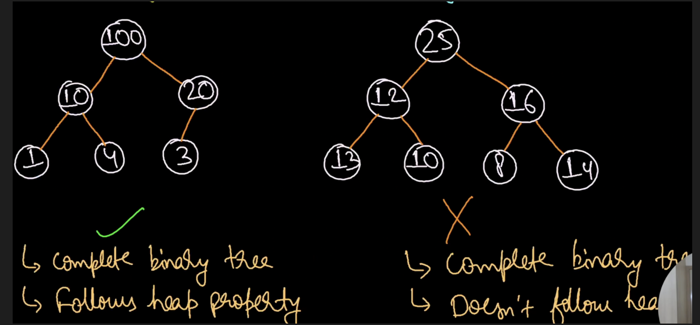
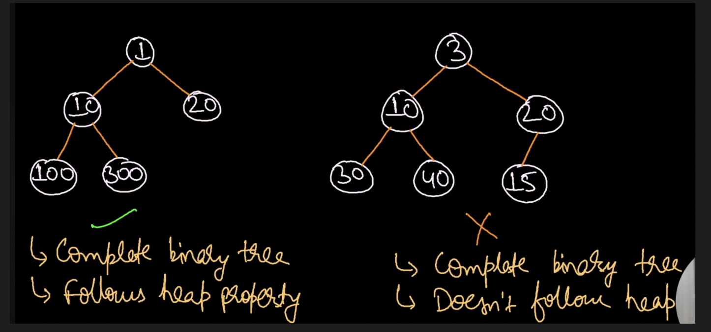

Heap
| Insert | Search | Find_minimum/Find_Maximum | Delete_minimun/Delete_Maximum | |
|---|---|---|---|---|
| Unsorted Array | O(1) | O(N) | O(N) | O(N) |
| Sorted Array | O(N) | O(logN) | O(1) | O(N) |
| Linked List | O(N) | O(N) | O(N) | O(N) |
| Min Heap | O(logN) | O(N) | O(logN) | O(logN) |
Complete Binary Tree¶
- Perfect Binary tree
- Almost Complete Binary tree
Both perfect binary tree and almost complete binary tree falls under complete binary tree
Perfect Binary Tree¶
All the levels will be completely filled

Almost complete binary tree¶
- Leaves should be present only at last and second last level
- Leaves at the same level must be filled from left to right

Heap data structure¶
- Tree based data structure
- Complete binary tree
- We can have n-ary heap as well
- Follows heap property
- Types: (i)Min Heap (ii)Max Heap
Max Heap¶
It is complete binary tree in which root should always be maximum and same goes for all subtrees

Min Heap¶
It is complete binary tree in which root should always be minimum and same goes for all subtrees

Representation of Heap¶
- Parent at index
ithen left child index2i+1right child index2i+2(0-based indexing) - Child at index
ithen parent atceil(i/2)-1 - Heap is a complete binary tree and can be stored in an array
- Maximum array size is
(2^(h+1)-1)for a perfect binary tree - Maximum nodes at height h
2^h - Maximum nodes in entire tree of height h is
(2^(h+1)-1)for perfect binary tree - Range of leaves
floor(N/2)+1 to N(for 1 based indexing) - Range of leaves
floor(N/2) to (N-1)(for 0 based indexing) - Range of internal nodes
1 to floor(N/2)(for 1 based indexing) - Range of internal nodes
0 to floor(N/2)-1(for 0 based indexing)
Heap property¶
Max Heap: Root node should be greater than all left and right subtree nodes and it is recursively true for all subtrees
A leaf node always follows heap property
Heapify algorithm¶
The process of rearranging the heap by comparing each parent with its children recursively is known as Heapify
MAX_HEAPIFY(A,i)
{
L=2*i+1
R=2*i+2
if(L<=A.heap_size and A[L]>A[i]){
largest=L
}else largest=i
if(R<=A.heap_size and A[R]>A[largest]){
largest=R
}
if(largest!=i){
swap(A[i],A[largest])
Max_HEAPIFY(A,largest)
}
}
Time Complexity¶
siftDown alone — a single call at index i travels at most the height of that subtree. In the worst case (called at root), that's O(log n).
BuildHeap — the naive guess is O(n log n) — you call siftDown roughly n/2 times, each costing O(log n). But this is too pessimistic.
The insight is that most nodes are near the bottom of the tree, where sift-down is cheap:
| Level from bottom | Nodes at this level | Max sift-down cost |
|---|---|---|
| 0 (leaves) | n/2 | 0 |
| 1 | n/4 | 1 |
| 2 | n/8 | 2 |
| ... | ... | ... |
| log n (root) | 1 | log n |
Total work = n/4 × 1 + n/8 × 2 + n/16 × 3 + ...
This sum converges to O(n) — which is why BuildHeap is O(n), not O(n log n). The majority of nodes sit at the bottom levels and barely move.